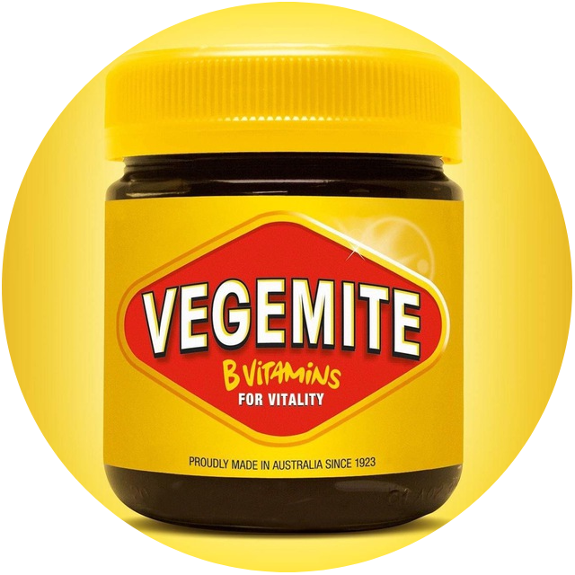
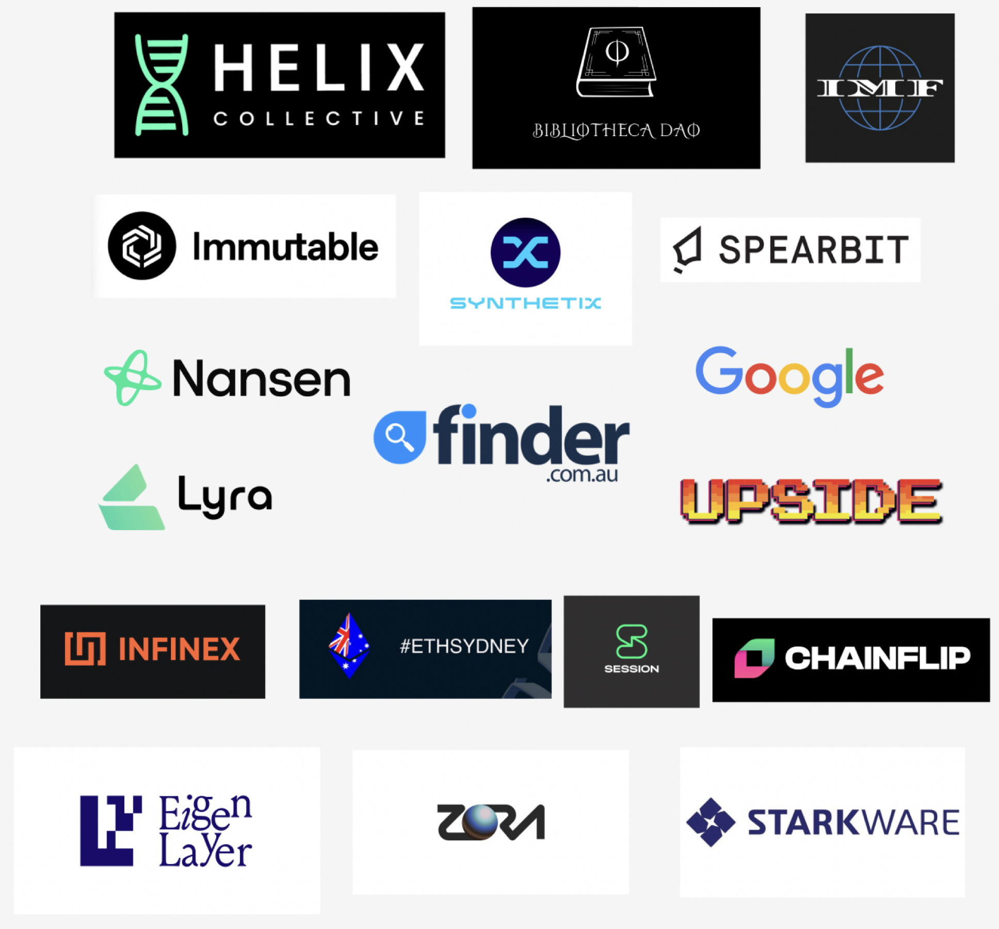
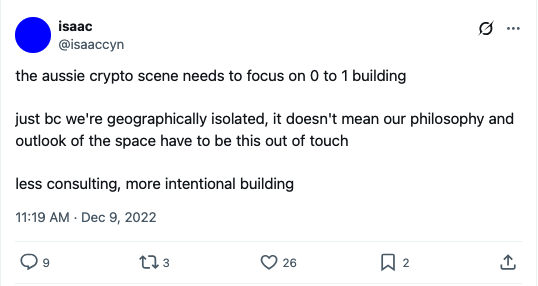
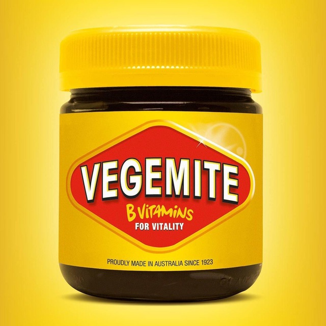
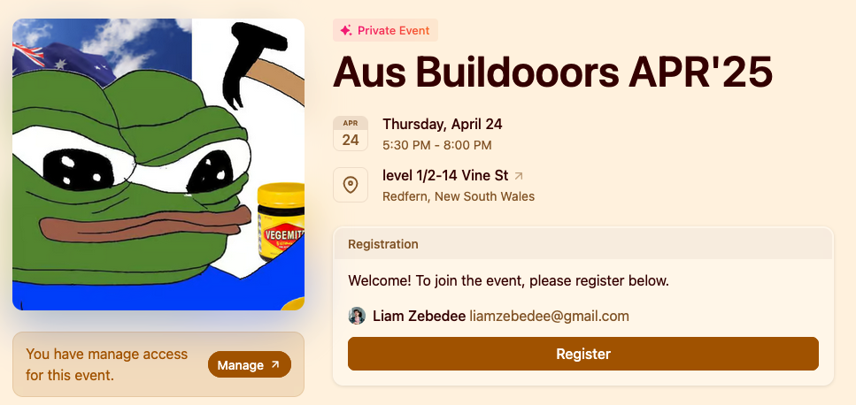
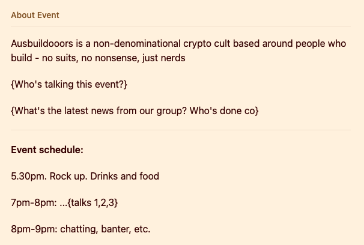
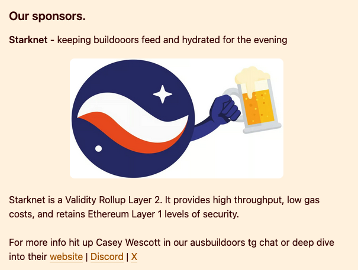
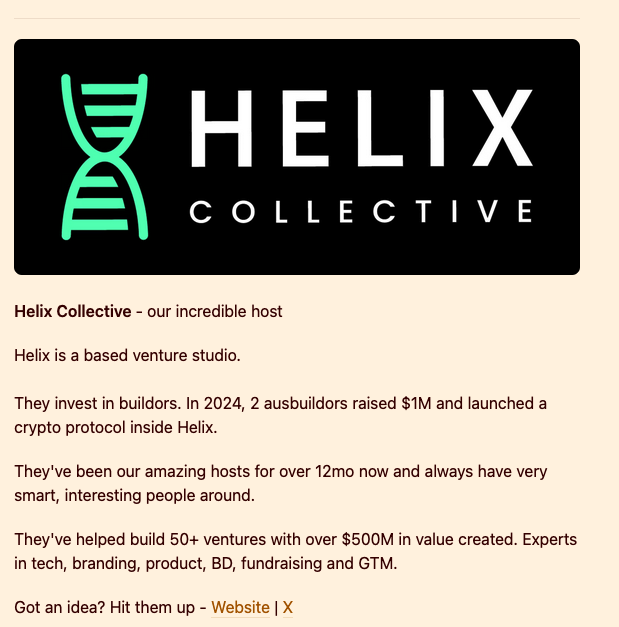
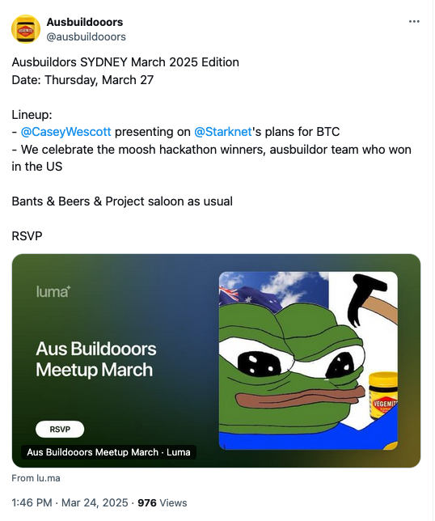

Ausbuildoors Guide.
Ausbuildoors Guide. 1
Overview. 2
The vibe. 3
Running Ausbuildor meetups. 5
Overview. 5
Creating an event. 5
Running an event. 6
Brand 7
Name and logo. 7
Luma event style guide. 7
Tweet style guide for event announcements. 11
Overview.
This guide covers all the processes involved in the Ausbuildors event / community / brand, so that anyone can run an event.
The vibe.
Ausbuildooors is a non-denominational crypto cult based around people who build - no suits, no nonsense, just nerds.
The principles for the group:
- No suits. Ausbuildors is the complete opposite of the suits-based crypto scene in Australia (marketing, consultants).
- YES: anyone who is building stuff.
- NO: anyone who is marketing stuff.
- Australians.
- YES: anyone who is Aussie, whether they are currently located here or expat.
- YES: from anywhere in Australia.
- NO: adding people who aren’t aussie.
- A community that’s online and offline.
- Ausbuildors is both online and offline.
- Online: main Telegram group chat.
- Offline: meetups.
The gap Ausbuildors fills:
- Australian builders are goated. We are internet natives, good at what we do. We just lack a social schelling point for meeting up.
- Ausbuildors creates a space where people who build can congregate.
- This leads to:
- Stronger social ties
- Stronger networks, better opportunities for Aussies
- Banter in our timezone
- More opportunities in our network:
- Introductions to people (Paradigm, etc)
- Hookups for jobs, investments
- Connections to specialists (accountants, lawyers) who are competent and know what they’re talking about.
- A local scene to share projects we’ve built. And an audience to learn from.
The essential parts to this:
- Event space and sponsorship.
- Having a regular physical space is super important.
- Having pizza + beers is also super important.
- Big thanks to Helix and our previous event hosts (KingRiver, Immutable) for providing this.
- Warm intros when people are added.
- Soft moderation of group chat to keep people on topic, filter out noise.
A brief bio:
Our community includes: DeFi founders and contributors (Lyra, Synthetix, Infinex), EVM paralellizors (Rise), on-chain Microstrategy for ETH, famous algorithmic musicians, onchain game engineers (Loot Realms), cyberpunks who build DHT's, VC's, futures traders, lawyers and accountants (dw they aren't narcs), security auditors (Spearbit) and more
We've been running the Sydney meetups monthly for 2yrs now (yes even in the bear lol), and are now expanding our presence to Brissy
Our meetups usually include 1-3 lightning talks and open sessions to chat about ideas between builders. But since this our 1st one, we are going to focus on just getting to know everybody
Our goal is to grow and connect the local scene over beers and bants.
Some of the people in our network:

A brief history:
It all started from this tweet.

Key people and things.
- The organisers group chat
- Amanda, Jeeva, Siderides, Stableshaman, Casey, Miffy, Liam
- We all set the culture and discuss what’s good and not
- Liam - I’m responsible for setting the brand and events.
- Casey has been taking photos and regularly posting bios on Twitter which has been really great.
- Helix - our godfather. Gives us the permission to run these events at their offices in Redfern. And pays for beers and pizza.
- Starknet - our other godfather. Casey organises sponsorship for beers and pizza through a grant from the Starknet Foundation.
Running Ausbuildor meetups.
Overview.
- Events are run using Luma.
- Events are run on the last Thursday of every month for regularity.
- Events are organised via AusBuildoors - wranglerooors group chat on TG.
- The organisers involved are:
- Amanda
- Casey
- Liam
- Stableshaman
- Siderides
- Jeeva
- Events are created one month in advance.
- Events usually include 1-3 talks:
- Talks are open-ended, salon-like feedback sessions.
- Anyone can present.
Creating an event.
- Duplicate the most recent event in Luma. This will be included in the Ausbuildor shared Luma calendar.
- There is a style guide that the events adhere to:
- Event logo.
- Event title.
- Event description:
- Bio.
- Event schedule.
- Sponsors.
- Edit the event title.
- Announce the forthcoming meet 2 weeks in advance.
- Post in the Ausbuildors main chat on TG.
- Post on Twitter.
- Use this format: https://x.com/ausbuildooors/status/1904001918986592577
- Arrange speakers.
- Put a callout in the group chat.
- Ask anyone who has done something cool recently to present.
- Post in TG reminder about event 1 wk before.
- Post in TG reminder about event 2 days before.
- Send a Luma email reminder to our mailing list (122 subscribers). This usually adds 12+ ppl.
- On the night, post to the wranglors group chat the current attendee numbers so we can plan pizza.
- Take 1-3 pictures on the night.
- Post to Twitter.
- Retweet anyone who is posting about us from the main account.
Running an event.
Running an event is relatively relaxed. It usually goes like:
- 5.30pm-6.30pm. People rock up.
- 6.00-7.00pm. Beers and banter.
- 7.00-8pm. Talks.
- We try to keep the talks fast and active. 10-20mins per talk + 20mins discussion / interactive Q&A.
- 8.30pm-9.30pm. After talks convo.
Brand
Name and logo.
Name: Ausbuildooors (3 o’s)
Logo:

- Logo is distinctive and single colour.
- This works better.
- We were going to have an AI generated slop logo. But that would just be noise.
- Bright yellow stands out and is good and distinctive.
Luma event style guide.
[Luma event template]

Event title: Aus Buildooors MONTH’YEAR
Event date: Last Thursday of the month
Event time: 5.30pm-8pm. We keep the timing tight. People like short and sweet.
Event logo: anything but we usually use Pepe

Event description:
Each of these is separated by a horizontal separator.
- Brief blurb - what is ausbuildors?
- This helps restate what we’re doing and intros new people to the events.
- Event details / hook - what’s new in the scene? Who’s presenting and about what? What are people going to learn/pickup this event?
- This is the hook for the event.
- Keeps people up-to-date with what the event will be about.
- Event schedule.
- This is the raw information about who and when is being presented. Helps for new members.
- Sponsors.
- Sponsor section.
- Logo.
- This goes first. Logos > text when reading.
- Logos must be readable. White or black background with padding.
- Bio.
- Links.


Tweet style guide for event announcements.
This is just for posting events. Post anything else you want on the account.
[Tweet template]

1st line: Event title: Ausbuildors {LOCATION} {March 2025}
2nd line: Date: {Thursday, March 27}
- The point of tweets is to boost the brand.
- Important to show:
- The exact name of the group.
- The exact location and date and time.
- Readable instantly.
- So that anyone can share this and read the first line and know if they can make it or not.
Lineup:
- If they can make it / or maybe can, then we can hook them with more information about what’s going on.
- Tag each person presenting if possible and affiliations. That way they can retweet it. And we amplify who they are.
- Make this short and sweet. 6 words at max.
Closer - Bants and Beers as usual.
- Adds a bit of familiarity.
RSVP + Luma link:
- Call to action.
- Link the Luma here.
- The event card increases the tweet size which is good for standing out in the feed.
Telegram chat.
Telegram is our base for keeping people chatting.
- Anyone can invite people to the chat.
- Only add people that you would like to see in the community.
Invite link:
https://t.me/+eriIMP4LeVFhOTJl
Guide to keeping the chat healthy and moderated:
- NO SPAM. NO BULLSHIT.
- New people take some time to adjust to the chat culture. If someone is “off” - give them some chances.
- Intros are a MUST. Just tag and ask for new members to intro / for person inviting to intro them.
- We rarely need to kick people. But if someone is posting stuff that’s offtopic, send them a personal DM. Explain to them the vibe, be nice.
Website.
https://ausbuildors.liamz.co/
We have a website right now. It’s only used as the Twitter link. It might be useful in future to list the different talks, events, etc.